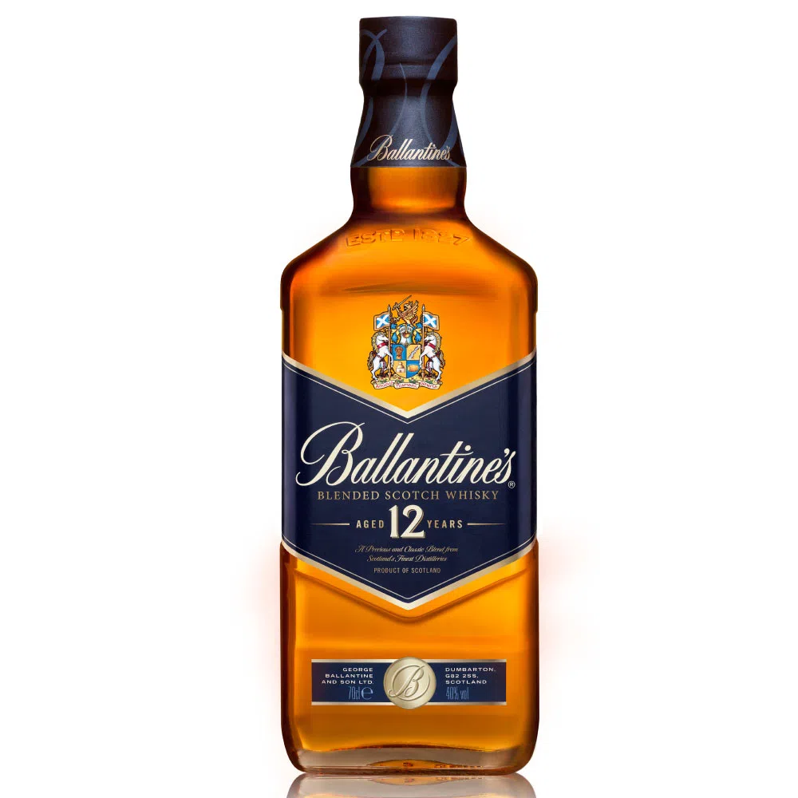
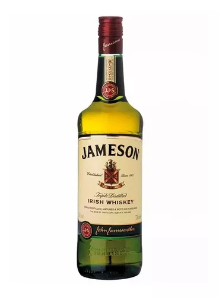

El whisky nació en Irlanda y su elaboración se extendió rápidamente en Escocia. Es un destilado de cereal envejecido en barricas de madera. Los pioneros en destilarlo y formalizar el proceso de elaboración fueron monjes, de ellos pasó a los campesinos que instalaron infinidad de alambiques caseros.
Actualmente, el wh es el más preciado en el mercado de aguardientes. Además de ser de gran calidad, los ingleses lo extendieron a lo largo del mundo con su llegada a Canadá y Estados Unidos proliferando numerosas destilerías.
Tipos de whiskies y sus diferencias
Whisky blended scotch:
Imagina que de un lado tenemos un whisky escocés single malt; es decir whiskies que han sido creados en una sola destilería con agua, levadura y la malta de la cebada. Del otro lado tenemos un whisky escoces single grain; es decir que ha sido creado en una sola destilería donde además de agua se usaron otros granos como el maíz, centeno, trigo o cebada (puede ser también una combinación de varios de ellos) . Estos dos whiskies mezclados pueden dar vida a un blended whisky, ¡sí!, así de simple, un blended whisky es la combinación de uno o varios single malt scotch con uno o varios single grain scotch.Este tipo de whisky es uno de los más populares en las tiendas de licores y en tus bares favoritos; de hecho el 80% del volumen que se exporta de los blended del mundo provienen de Escocia.
Whisky irlandes:
La preparación del whisky irlandés se elabora a partir del mosto obtenido de cereales. Esta mezcla se compone generalmente de cebada malteada y sin maltear procedente de centeno, avena y trigo. El procedimiento es similar a los whiskies escoceses. Tras la selección de los cereales, se realiza la mezcla propia de cada destilería; posteriormente se lavan y se remojan (hidratación) para someterlos a su germinación, proceso en que se transforma el almidón de los cereales en azúcares solubles. Seguidamente, se muelen los granos (excepto los que previamente tengan que ser malteados) y, tras realizar la infusión o empastaje, se procede a la fermentación del líquido obtenido durante aproximadamente 72 horas. Obtenido el vino, se realizan 3 destilaciones al cabo de las cuales se somete a envejecimiento en cubas de roble (antiguamente debían haber contenido vino de Jerez).
Whisky american:

El whisky de Bourbon o whisky borbón es una bebida destilada de la familia de los whiskies exclusiva de los Estados Unidos que se caracteriza por ser ligeramente aromática y de sabor acaramelado. Según la legislación estadounidense, debe elaborarse a base de maíz, en una concentración entre el 50 y el 70%, porcentaje este más generalizado. Otros ingredientes añadidos son trigo, centeno o cebada malteados. No existen requerimientos legales para este período mínimo y que el producto final se denomine bourbon, pero para denominarlo straight bourbon debe haber cumplido un envejecimiento mínimo de dos años. Además, cualquier bourbon con menos de 4 años de envejecimiento debe notificar en la etiqueta el periodo concreto. Por regla general, el bourbon se madura durante un período de 5 años en barricas de roble, las cuales pueden ser nuevas y/o tostadas.